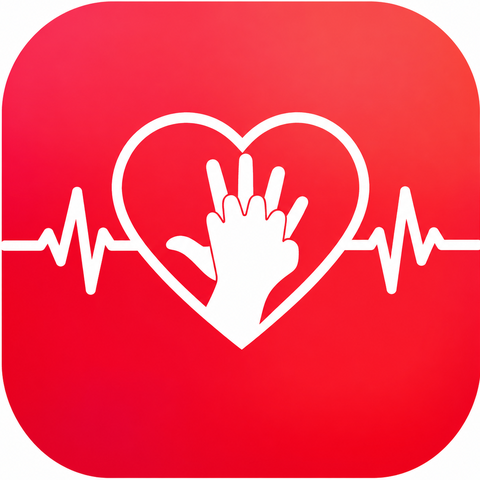

XI:ON · CPR TRAINING
CPR Training Analytics
스마트 CPR 교육 결과 분석 시스템
XI:ON · PROGRESS ANALYTICS
나의 CPR 교육 변화
Firebase에 저장된 내 교육 기록을 바탕으로 회차별 변화를 비교합니다.
기록을 불러오는 중입니다…
내 교육 기록본인 계정의 수령 완료 기록
내 기록을 불러오는 중입니다.
압박 깊이 변화 그래프
권장 범위 (5~6 cm) ● 측정값압박 순서